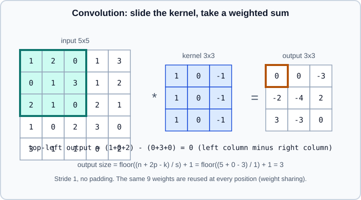

Convolutional Neural Networks
|
This content was generated with the assistance of AI and should be verified against the official documentation before being relied on in production. |
A convolutional neural network (CNN) is a network whose layers apply the same small filters at every position of a grid-shaped input: pixels of an image, samples of an audio spectrogram, cells of a board. That one design decision, local connections with shared weights, makes the network far smaller than a fully connected one, gives it a built-in assumption that patterns look the same wherever they appear, and made CNNs the standard tool for vision for a decade. This page explains the operation, the arithmetic you need to size a network, the building blocks and the main architectures, and shows how to write, train and reuse CNNs in PyTorch and Keras.
Examples target Python 3.13, PyTorch 2.15 with torchvision and TensorFlow 2.21 with Keras 3.15, and were checked against the official documentation on 2026-10-30. Examples were run on Python 3.13 with PyTorch 2.15 and torchvision 0.29 (CPU) and Keras 3.15 on TensorFlow 2.21 on 2026-11-01; the Keras directory example was run on a small synthetic image folder with fewer epochs. The page assumes Neural Network Fundamentals and the training procedure of Training Deep Networks. For the sequence counterpart see RNNs, LSTMs & GRUs, and for the architecture that increasingly replaces or complements convolutions in vision see Attention & Transformers.
Why convolutions
Consider a 224 by 224 colour image (150,528 numbers) fed to a single fully connected layer with 1,000 units. That layer alone has about 150 million weights, treats pixel (10, 10) and pixel (10, 11) as unrelated inputs, and must relearn the same pattern, say a vertical edge, separately for every location. Images have structure that this ignores:
-
Locality. Useful features (edges, corners, textures) depend on a small neighbourhood of pixels.
-
Translation equivariance. If a pattern moves, its detector response moves with it. A convolution has exactly this property: shifting the input shifts the output.
-
Hierarchy. Edges combine into textures, textures into parts, parts into objects. Stacking layers lets later units see larger regions.
A convolutional layer encodes the first two as constraints: each output unit looks only at a small window, and all windows share one set of weights. The same 3 by 3 kernel over three input channels has 27 weights (plus a bias), however large the image is. Pooling and strided convolutions then add some invariance to small shifts and shrink the grid so deeper layers see more context.
The convolution operation
Deep-learning libraries compute cross-correlation and call it convolution: the kernel is slid over the input without being flipped. For a single-channel input \(x\) and a \(k \times k\) kernel \(w\) with bias \(b\), the output at position \((i, j)\) with stride 1 is
\[ y_{i,j} = b + \sum_{a=0}^{k-1} \sum_{c=0}^{k-1} w_{a,c} \; x_{i+a,\, j+c} \]
(True convolution flips \(w\) first; because the kernel is learned, the flip makes no difference to what the network can represent, only to how a hand-written kernel from a signal-processing book must be read.)

With several channels, each output channel has its own kernel spanning all input channels. A layer with \(C_{in}\) input channels, \(C_{out}\) output channels and a \(k \times k\) kernel therefore holds a weight tensor of shape \((C_{out}, C_{in}, k, k)\) and \(C_{out}\) biases. Each output channel (a feature map) is a sum over input channels of 2-D correlations, plus the bias. The number of learnable parameters is
\[ P = C_{out} \cdot (C_{in} \cdot k^2 + 1) \]
The following pure-Python program implements the operation directly, checks the figure above and the output-size and parameter formulas used in the rest of the page:
def conv2d(image, kernel, stride=1, padding=0):
"""Cross-correlation of a square list-of-lists image with a kernel."""
n, k = len(image), len(kernel)
padded = [[0] * (n + 2 * padding) for _ in range(n + 2 * padding)]
for i in range(n):
for j in range(n):
padded[i + padding][j + padding] = image[i][j]
out_size = (n + 2 * padding - k) // stride + 1
return [
[
sum(padded[i * stride + a][j * stride + b] * kernel[a][b] for a in range(k) for b in range(k))
for j in range(out_size)
]
for i in range(out_size)
]
image = [[1, 2, 0, 1, 3], [0, 1, 3, 1, 2], [2, 1, 0, 2, 1], [1, 0, 2, 3, 0], [3, 1, 1, 0, 2]]
kernel = [[1, 0, -1], [1, 0, -1], [1, 0, -1]]
print(conv2d(image, kernel)) # 3x3 output
print(len(conv2d(image, kernel, padding=1))) # "same" padding keeps 5
print(len(conv2d(image, kernel, stride=2))) # stride 2 gives floor((5-3)/2)+1 = 2
def conv_out(n, k, p=0, s=1, d=1):
return (n + 2 * p - d * (k - 1) - 1) // s + 1
print(conv_out(224, 7, p=3, s=2), conv_out(56, 3, p=1), conv_out(32, 3, d=2))
def params(c_in, c_out, k, bias=True, groups=1):
return c_out * (c_in // groups) * k * k + (c_out if bias else 0)
print(params(3, 64, 3), params(64, 64, 3), params(64, 64, 3, groups=64) + params(64, 64, 1))Output:
[[0, 0, -3], [-2, -4, 2], [3, -3, 0]] 5 2 112 56 28 1792 36928 4800
Source: derived from the CS231n convolutional networks notes and Dive into Deep Learning: Convolutions for images.
Output size, padding, stride and dilation
For an input of size \(n\) along one axis, kernel size \(k\), padding \(p\) on each side, stride \(s\) and dilation \(d\), the output size is
\[ n_{out} = \left\lfloor \frac{n + 2p - d(k-1) - 1}{s} \right\rfloor + 1 \]
which for \(d = 1\) reduces to the familiar \(\lfloor (n + 2p - k)/s \rfloor + 1\).
-
Padding adds a border of zeros (other modes exist: reflect, replicate, circular). Without it ("valid") the map shrinks by \(k-1\) per layer and border pixels are used less than central ones. With \(p = (k-1)/2\) and stride 1 and odd \(k\) the size is preserved ("same"). PyTorch accepts
padding="same"for stride-1 convolutions as well as integers; Keras uses the strings"valid"and"same". -
Stride subsamples the output. A stride of 2 halves each spatial dimension, so it can replace pooling as the downsampling step. In Keras,
"same"padding with a stride gives \(\lceil n / s \rceil\), not the number the formula above gives for \(p = (k-1)/2\); verify sizes withmodel.summary(). -
Dilation spaces out the kernel taps, enlarging the region a kernel covers without adding weights. A 3 by 3 kernel with dilation 2 covers a 5 by 5 region. It is common in segmentation and audio models, and a stack of dilations can grow the receptive field exponentially.
-
Kernel size. Odd sizes keep the output centred on an input position. Three stacked 3 by 3 convolutions see the same 7 by 7 region as one 7 by 7 kernel, with fewer weights (\(27C^2\) against \(49C^2\) for \(C\) channels in and out) and two extra non-linearities, which is why 3 by 3 became the default.
Receptive field
The receptive field of a unit is the region of the input that can influence it. Stacking \(L\) stride-1 convolutions of kernel size \(k\) gives a receptive field of \(L(k-1)+1\); strides and pooling multiply how fast it grows, because later kernels step over more input pixels. A classifier needs a receptive field comparable to the object it recognises: if the largest receptive field is smaller than the object, the network cannot see the whole thing. The effective receptive field is smaller than the theoretical one, since central pixels contribute more.
Building blocks
Pooling
Max pooling takes the maximum over each window (commonly 2 by 2 with stride 2) and average pooling the mean. Pooling has no weights, reduces the grid by a constant factor and adds tolerance to small shifts. Global average pooling (GAP) averages each feature map to one number, turning a \(C \times H \times W\) tensor into \(C\) values; it removes the huge fully connected layers of older networks and makes the model independent of the input resolution (nn.AdaptiveAvgPool2d(1) in PyTorch, layers.GlobalAveragePooling2D() in Keras). Many modern networks replace most pooling with stride-2 convolutions and keep only GAP at the end.
1x1 convolutions
A 1 by 1 convolution mixes channels at each position independently: it is a fully connected layer applied per pixel. It is used to change the number of channels cheaply, to compress channels before an expensive 3 by 3 convolution (the bottleneck of ResNet-50 and larger), and to project a skip connection to a matching shape.
Depthwise-separable and grouped convolutions
A depthwise convolution applies one \(k \times k\) kernel per input channel (groups=C_in), and a following pointwise 1 by 1 convolution mixes channels. The pair costs \(C_{in}k^2 + C_{in}C_{out}\) multiply-accumulates per position instead of \(C_{in}C_{out}k^2\): for 64 channels and a 3 by 3 kernel, 4,800 parameters against 36,928 in the example above. MobileNet and EfficientNet are built on this block. Grouped convolutions split channels into independent groups (ResNeXt); depthwise is the extreme case. Depthwise layers have low arithmetic intensity, so on GPUs their speed-up is smaller than the operation count suggests.
Normalisation, activation and ordering
Almost every CNN block combines a convolution, a normalisation layer and a non-linearity. Batch normalisation, which normalises each channel over the batch and spatial positions, is the usual choice (see Training Deep Networks); group normalisation helps with very small batches, and layer normalisation is typical in ConvNeXt-style networks. Place the convolution’s bias off (bias=False) when a batch-norm layer follows, since the normalisation’s own offset replaces it. ReLU remains the default activation; GELU and SiLU/Swish are common in newer designs.
Classifier heads and dense prediction
A classification head is GAP followed by one linear layer to the number of classes. Detection, segmentation and other dense-prediction tasks keep the spatial grid: fully convolutional networks use 1 by 1 convolutions in place of linear layers, transposed convolutions or upsampling plus convolution to restore resolution, and U-Net-style skip connections to bring early high-resolution features to the output. Those task-specific designs are beyond this page; start from a library model and its reference training recipe.
Residual networks
Plain stacks of convolutions become hard to train beyond a few dozen layers: adding layers can make the training error worse, not better. A residual block adds a shortcut so the layer learns a correction to its input:
\[ y = x + F(x) \]
where \(F\) is a few convolution, normalisation and activation layers. If the best mapping is close to the identity, the block only needs to push \(F\) towards zero. The shortcut also gives gradients a direct path to early layers, which is why networks of 50 to 152 layers (and, with changes, over a thousand) train reliably.
BN, ReLU"] C1 --> C2["conv 3x3
BN"] X --> P["identity
or 1x1 conv when shapes differ"] C2 --> ADD(("+")) P --> ADD ADD --> R["ReLU"] R --> Y["output y"]
When the block changes the number of channels or halves the resolution, the shortcut uses a 1 by 1 convolution (with the same stride) to match shapes. The bottleneck variant uses 1 by 1, 3 by 3, 1 by 1 convolutions to reduce, process and restore channels. Later work reordered the layers ("pre-activation"), added squeeze-and-excitation channel attention, or replaced the whole block with depthwise convolutions and larger kernels (ConvNeXt).
A short history, and what is current
| Architecture | Year | Idea that stuck |
|---|---|---|
LeNet-5 |
1998 |
Convolution, pooling and a small classifier trained by backpropagation (digit recognition). |
AlexNet |
2012 |
Deep CNN on GPUs with ReLU, dropout and heavy augmentation; started the modern era on ImageNet. |
VGG |
2014 |
Only 3 by 3 convolutions stacked deeply; simple and large (most parameters sit in the dense head). |
Inception (GoogLeNet) |
2014 |
Parallel branches of different kernel sizes and 1 by 1 bottlenecks; auxiliary classifiers were later dropped. |
ResNet |
2015 |
Residual shortcuts, batch normalisation, GAP; still the reference baseline. |
DenseNet |
2017 |
Concatenate features of all earlier layers; feature reuse with few parameters but memory-hungry. |
MobileNet, EfficientNet |
2017 onward |
Depthwise-separable convolutions, compound scaling of depth, width and resolution, for efficiency. |
ConvNeXt |
2022 |
A ResNet modernised with the training recipe and design choices of transformers, competitive with them. |
Older books present VGG and AlexNet as the state of the art and recommend large dense heads, local response normalisation, hand-built augmentation loops or learning from scratch on small datasets. Those are historical. Current practice for a new image task is to start from a pre-trained model (a ResNet, EfficientNet or ConvNeXt for CNNs, or a Vision Transformer) and fine-tune it, as described in Transfer Learning, Fine-Tuning & Foundation Models, and to train from scratch only when the data is unlike natural images or large enough to justify it. For tabular data, a CNN is rarely the right tool (see Tabular Data: Gradient Boosting vs Deep Learning).
Data layout and shapes
PyTorch tensors for 2-D convolutions are \((N, C, H, W)\) (batch, channels, height, width), "channels first". Keras 3 defaults to data_format="channels_last", \((N, H, W, C)\), from its configuration (keras.config.image_data_format()); with the JAX and TensorFlow backends channels last is the natural choice, and the Keras layers accept either. Moving data between libraries therefore needs a transpose, and a model that expects 3 channels fails on grayscale unless you add a channel axis. For performance on NVIDIA GPUs, PyTorch can store 4-D tensors in channels-last memory order without changing their logical shape: model.to(memory_format=torch.channels_last) and x.to(memory_format=torch.channels_last); combined with mixed precision (see Hardware, Memory & Mixed Precision) this often speeds up convolution training noticeably, but measure it on your hardware.
PyTorch: a CNN from scratch
The example builds a small network from reusable convolution blocks, with batch normalisation, GAP and a linear head, and trains it on Fashion-MNIST with torchvision. train() and eval() matter because batch normalisation behaves differently in each. It downloads the dataset on first run.
import torch
from torch import nn
from torch.utils.data import DataLoader
from torchvision import datasets
from torchvision.transforms import v2
torch.manual_seed(0)
device = torch.accelerator.current_accelerator() or torch.device("cpu")
def block(c_in: int, c_out: int) -> nn.Sequential:
return nn.Sequential(
nn.Conv2d(c_in, c_out, kernel_size=3, padding=1, bias=False),
nn.BatchNorm2d(c_out),
nn.ReLU(inplace=True),
)
class SmallCNN(nn.Module):
def __init__(self, in_channels: int = 1, num_classes: int = 10):
super().__init__()
self.features = nn.Sequential(
block(in_channels, 32), block(32, 32), nn.MaxPool2d(2), # 28 -> 14
block(32, 64), block(64, 64), nn.MaxPool2d(2), # 14 -> 7
block(64, 128),
nn.AdaptiveAvgPool2d(1), # 7 -> 1
)
self.classifier = nn.Linear(128, num_classes)
def forward(self, x: torch.Tensor) -> torch.Tensor:
return self.classifier(torch.flatten(self.features(x), 1))
def main() -> None:
model = SmallCNN().to(device)
print(sum(p.numel() for p in model.parameters()), "parameters")
print(model(torch.zeros(2, 1, 28, 28, device=device)).shape) # torch.Size([2, 10])
train_tf = v2.Compose([
v2.RandomCrop(28, padding=2),
v2.ToImage(),
v2.ToDtype(torch.float32, scale=True),
v2.Normalize(mean=[0.2860], std=[0.3530]),
])
test_tf = v2.Compose([
v2.ToImage(),
v2.ToDtype(torch.float32, scale=True),
v2.Normalize(mean=[0.2860], std=[0.3530]),
])
train_ds = datasets.FashionMNIST("data", train=True, download=True, transform=train_tf)
test_ds = datasets.FashionMNIST("data", train=False, download=True, transform=test_tf)
train_loader = DataLoader(train_ds, batch_size=128, shuffle=True, num_workers=2)
test_loader = DataLoader(test_ds, batch_size=512)
epochs = 3
optimizer = torch.optim.AdamW(model.parameters(), lr=2e-3, weight_decay=0.01)
scheduler = torch.optim.lr_scheduler.OneCycleLR(
optimizer, max_lr=4e-3, epochs=epochs, steps_per_epoch=len(train_loader)
)
loss_fn = nn.CrossEntropyLoss()
for epoch in range(epochs):
model.train()
for x, y in train_loader:
x, y = x.to(device), y.to(device)
optimizer.zero_grad(set_to_none=True)
loss_fn(model(x), y).backward()
optimizer.step()
scheduler.step() # OneCycleLR steps once per batch
model.eval()
correct = 0
with torch.inference_mode():
for x, y in test_loader:
x, y = x.to(device), y.to(device)
correct += (model(x).argmax(1) == y).sum().item()
print(f"epoch {epoch}: test accuracy {correct / len(test_ds):.3f}")
if __name__ == "__main__": # required for DataLoader workers on macOS and Windows, which spawn processes
main()Source: PyTorch tutorials: Build the neural network, torch.nn.Conv2d and torchvision: Transforming and augmenting images.
Notes on the example:
-
The mean and standard deviation passed to
Normalizeare the usual Fashion-MNIST statistics; compute them from your own training set (never including the test set) for other data, or use the statistics that match a pre-trained model. -
Augmentation belongs in the training transform only. Flips suit natural photos but change the meaning of digits and letters, and vertical flips suit overhead imagery more than photos of people.
-
bias=FalsebeforeBatchNorm2dremoves a redundant parameter. The network has fewer than 250 thousand parameters. -
Use
torch.inference_mode()ortorch.no_grad()for evaluation, andmodel.eval()so that batch normalisation uses its running statistics. -
The training code sits in
main()behindif __name__ == "__main__":becausenum_workers=2starts worker processes, and on macOS and Windows they re-import the script; without the guard the script stops with a RuntimeError when the loader starts its workers. -
On a CPU the three epochs take about a minute and reach a test accuracy of about 0.91.
-
Older tutorials use idioms such as
torch.autograd.Variable; Legacy APIs & Migration lists their replacements.
PyTorch: using a pre-trained CNN
torchvision provides models with named weight enums that carry the matching preprocessing. The old pretrained=True argument has been deprecated since torchvision 0.13 and still works with a warning in 0.29, but it may be removed; use weights=.
import torch
from torch import nn
from torchvision.models import resnet18, ResNet18_Weights
weights = ResNet18_Weights.DEFAULT # best available ImageNet weights
model = resnet18(weights=weights)
preprocess = weights.transforms() # resize, crop, scale and normalise as in training
# Replace the classifier for a 5-class task and freeze the backbone.
for param in model.parameters():
param.requires_grad = False
model.fc = nn.Linear(model.fc.in_features, 5) # new layer: trainable by default
trainable = [p for p in model.parameters() if p.requires_grad]
print(sum(p.numel() for p in trainable), "trainable parameters") # 2565
optimizer = torch.optim.AdamW(trainable, lr=1e-3, weight_decay=0.01)
# Frozen BatchNorm layers must stay in evaluation mode, or their running statistics drift.
def set_training_mode(m: nn.Module) -> None:
m.train()
for module in m.modules():
if isinstance(module, nn.BatchNorm2d):
module.eval()
# Inference on a batch of PIL images or tensors:
# batch = torch.stack([preprocess(img) for img in images])
# with torch.inference_mode(): probabilities = model.eval()(batch).softmax(dim=1)
print(weights.meta["categories"][:3])Source: torchvision: Models and pre-trained weights and PyTorch tutorials: Transfer learning for computer vision.
Fine-tuning, discriminative learning rates and when to unfreeze layers are covered in Transfer Learning, Fine-Tuning & Foundation Models. The weights are downloaded and cached on first use; the licence and training data of a given weights entry are listed in its metadata and its documentation page.
Keras 3: a CNN with built-in augmentation
Keras 3 puts augmentation in layers (RandomFlip, RandomRotation, RandomZoom, RandomTranslation, RandomContrast), which are active only during training and run inside the model, on the device. This replaces ImageDataGenerator, which is deprecated and, in Keras 3, reachable only through the tf.keras shim. Load images from a directory tree with keras.utils.image_dataset_from_directory, which returns a tf.data.Dataset that every backend can consume.
import keras
from keras import layers
keras.utils.set_random_seed(0)
# Directory layout: data/train/<class_name>/*.jpg and data/val/<class_name>/*.jpg
train_ds = keras.utils.image_dataset_from_directory(
"data/train", image_size=(128, 128), batch_size=32, label_mode="int", seed=0
)
val_ds = keras.utils.image_dataset_from_directory(
"data/val", image_size=(128, 128), batch_size=32, label_mode="int", shuffle=False
)
num_classes = len(train_ds.class_names)
train_ds = train_ds.prefetch(1)
val_ds = val_ds.prefetch(1)
def conv_block(x, filters):
x = layers.Conv2D(filters, 3, padding="same", use_bias=False)(x)
x = layers.BatchNormalization()(x)
return layers.Activation("relu")(x)
inputs = keras.Input(shape=(128, 128, 3))
x = layers.RandomFlip("horizontal")(inputs) # augmentation, active in training only
x = layers.RandomRotation(0.1)(x)
x = layers.Rescaling(1.0 / 255)(x)
for filters in (32, 64, 128):
x = conv_block(x, filters)
x = conv_block(x, filters)
x = layers.MaxPooling2D(2)(x)
x = layers.GlobalAveragePooling2D()(x)
x = layers.Dropout(0.3)(x)
outputs = layers.Dense(num_classes)(x) # logits
model = keras.Model(inputs, outputs)
model.compile(
optimizer=keras.optimizers.AdamW(learning_rate=1e-3, weight_decay=0.01),
loss=keras.losses.SparseCategoricalCrossentropy(from_logits=True),
metrics=["accuracy"],
)
model.summary()
callbacks = [
keras.callbacks.EarlyStopping(monitor="val_loss", patience=5, restore_best_weights=True),
keras.callbacks.ModelCheckpoint("best.keras", monitor="val_loss", save_best_only=True),
]
model.fit(train_ds, validation_data=val_ds, epochs=30, callbacks=callbacks)Source: Keras: Conv2D layer, Keras: image augmentation layers and Keras: Image classification from scratch.
A pre-trained backbone from keras.applications follows the same pattern:
import keras
import numpy as np
from keras import layers
base = keras.applications.MobileNetV3Small(
input_shape=(224, 224, 3), include_top=False, weights="imagenet"
)
base.trainable = False # freeze for the first stage
inputs = keras.Input(shape=(224, 224, 3))
x = base(inputs, training=False) # keep BatchNorm in inference mode
x = layers.GlobalAveragePooling2D()(x)
x = layers.Dropout(0.2)(x)
outputs = layers.Dense(5)(x)
model = keras.Model(inputs, outputs)
model.compile(
optimizer=keras.optimizers.Adam(1e-3),
loss=keras.losses.SparseCategoricalCrossentropy(from_logits=True),
metrics=["accuracy"],
)
print(f"{sum(int(np.prod(w.shape)) for w in model.trainable_weights)} trainable parameters") # 2885Each model in keras.applications expects a specific input scaling (some include the scaling in the model, others need the matching preprocess_input function); read the model’s documentation page, because a wrong scale quietly lowers accuracy. Saving follows the Keras 3 rules: model.save("model.keras") for the full model, weights files named .weights.h5, and model.export() for a SavedModel; the legacy .h5 and SavedModel formats of older tutorials are not what model.save() writes any more.
Data augmentation
Augmentation creates new labelled examples by applying label-preserving transformations, and it is among the strongest regularisers for image models. Typical choices are random crops and resizes, horizontal flips, small rotations and translations, colour and brightness jitter, blur and cutout/random erasing. Stronger recipes mix examples (Mixup, CutMix) or search over policies (AutoAugment, RandAugment, TrivialAugment), and torchvision’s v2 transforms provide them. Rules of thumb:
-
Apply only transformations that keep the label correct for your task (a flipped chest X-ray changes which side the heart is on; a rotated "6" becomes "9").
-
Use the same deterministic resize and normalisation, without random operations, at validation and test time.
-
Augmentation is not a substitute for more data, but it lowers the gap between training and validation error without changing the model (see Generalization, Bias-Variance & Regularization).
-
Mixing strong augmentation with strong weight decay and dropout can underfit; add regularisers one at a time and watch the curves (see Tuning Deep Networks in Practice).
Common pitfalls
| Mistake | Fix |
|---|---|
Size mismatch in the first linear layer after the convolutions |
Compute the flattened size by pushing a dummy tensor through the feature extractor, or use global average pooling and a fixed-width head. |
Evaluating a model with batch normalisation in training mode |
Call |
Using the wrong normalisation for a pre-trained model |
Use the weights' own |
Grayscale input with a 3-channel model |
Add the channel axis, or repeat the channel three times, or change the first convolution’s |
Channel order confusion between PyTorch and Keras |
PyTorch tensors are channels first by default, Keras 3 channels last; transpose when moving data, and check |
Test-set statistics used for normalisation or augmentation choices |
Compute everything from the training split only. |
Random augmentation left on during validation |
Separate train and evaluation pipelines; in Keras the random layers are inactive outside training. |
Frozen backbone with batch normalisation still updating statistics |
Keep frozen BatchNorm layers in evaluation mode ( |
Old API in a copied tutorial |
See Legacy APIs & Migration for PyTorch and torchvision idioms and Migrating from Keras 2 to Keras 3 for Keras ones. |
Reproducibility expected on GPU without settings |
Convolution algorithms can be non-deterministic; see the PyTorch reproducibility notes and accept small run-to-run differences or enable deterministic algorithms at a speed cost. |
Checklist
-
Start from a pre-trained model unless the data is far from natural images or very large.
-
Size the network with the output-size and parameter formulas, and check shapes with a dummy input before training.
-
Prefer stacked 3 by 3 convolutions, batch normalisation, ReLU or a modern activation, residual connections and global average pooling.
-
Augment the training data with label-preserving transformations and keep validation deterministic.
-
Use
eval()/training=Falsecorrectly and keep normalisation consistent with the weights you start from. -
Tune the learning rate and weight decay first (see Optimizers & Learning-Rate Schedules).
-
Consider channels-last memory format and mixed precision for speed once the model is correct.